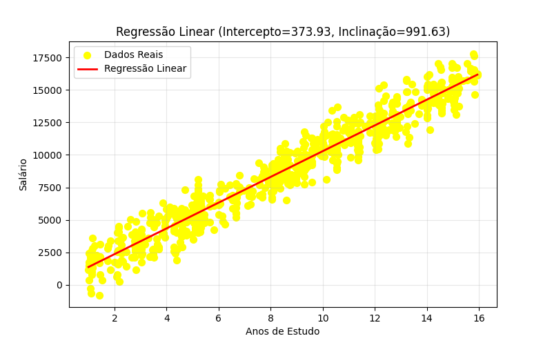

Regressão Linear em Python: Entendendo o Código Passo a Passo
A regressão linear é uma das técnicas mais simples e importantes quando queremos entender a relação entre duas variáveis. No exemplo abaixo, vamos analisar como anos de estudo influenciam o salário usando Python.
A seguir está o código completo e uma explicação bem fácil de entender sobre o que ele faz.
1. Importando as bibliotecas
import pandas as pd
import numpy as np
import matplotlib.pyplot as pltAqui carregamos três ferramentas essenciais:
- NumPy: para trabalhar com matemática e vetores.
- Pandas: não é essencial neste código, mas é importado para caso fosse usado em manipulações de dados.
- Matplotlib: para gerar os gráficos.
2. Carregando os dados (X = anos de estudo, y = salário)
try:
valores_x = np.loadtxt('X.txt')
valores_y = np.loadtxt('y.txt')
except:
valores_x = np.array([2, 3, 4, 5, 6, 7, 8, 9, 10, 12])
valores_y = np.array([1200, 1400, 1700, 2100, 2500, 2900, 3400, 3800, 4200, 5000])O código tenta ler os dados de dois arquivos externos:
X.txt(anos de estudo)y.txt(salários)
3. Montando a matriz da regressão linear
A fórmula da regressão linear é:
[ y = a + bX]
Para encontrar os coeficientes a (intercepto) e b (inclinação), o código aplica a solução matemática conhecida como equação normal.
X_matriz = np.column_stack((np.ones(len(valores_x)), valores_x))
Xt = X_matriz.TExplicando:
- Criamos uma matriz com 1s (para o intercepto) e com os valores de X.
- Calculamos a matriz transposta.
A matriz final tem esta cara:
| 1 | X |
|---|---|
| 1 | 2 |
| 1 | 3 |
| … | … |
4. Calculando os coeficientes (a e b)
XtX_inv = np.linalg.inv(np.dot(Xt, X_matriz))
beta = np.dot(XtX_inv, np.dot(Xt, valores_y))
a, b = beta[0], beta[1]Este é o coração matemático do cálculo.
Ele aplica a fórmula:
[ = (X^T X)^{-1} X^T y]
O resultado é um vetor beta, onde:
beta[0]é o intercepto (a)beta[1]é a inclinação (b)
5. Plotando o gráfico
Agora vem a parte visual!
Pontos reais
plt.scatter(valores_x, valores_y, color='yellow', s=50, label='Dados Reais')Desenha os pontos originais (anos de estudo × salário).
Linha da regressão
plt.plot(valores_x, a + b * valores_x, color='red', linewidth=2, label='Regressão Linear')Desenha a linha que melhor explica a relação entre X e Y.
Ajustes finais do gráfico
plt.title(f"Regressão Linear (Intercepto={a:.2f}, Inclinação={b:.2f})")
plt.xlabel("Anos de Estudo")
plt.ylabel("Salário")
plt.legend()
plt.grid(True, alpha=0.3)
plt.show()Essas linhas deixam o gráfico mais apresentável:
- título
- rótulos
- legenda
- grade leve
- exibição final
Resultado
O código gera um gráfico mostrando:
- Os dados reais, em pontos azuis
- A linha de regressão, em vermelho
- Os valores calculados de intercepto e inclinação
Com isso, fica fácil ver como o salário tende a crescer conforme aumentam os anos de estudo.

Arquivo com o codigo pronto